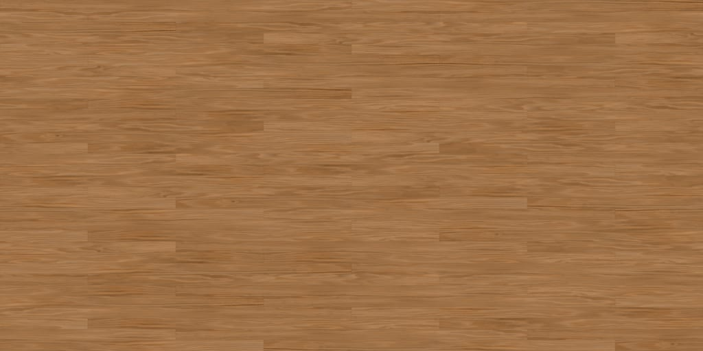

Floor look
Medium oak floor for a 5 by 8 bathroom
A 5 by 8 bathroom is about 40 square feet. With 10% waste, plan on about 44 square feet of medium oak flooring — roughly 3 boxes at 20 square feet per box. Check the coverage on your carton with the measure tool before you order.

About the medium oak look
Medium oak is the classic tan-brown oak stain with clear grain and a few small knots. Its middle tone hides everyday dirt, dust, and minor scratches better than very light or very dark floors. It suits traditional and transitional rooms with white or cream trim, and it looks right in both sunny and dim rooms.
Styling medium oak in a 5 by 8 bathroom
Medium oak looks good with a white vanity, white or cream tile, and oil-rubbed bronze or matte black fixtures.
Bathroom notes
A bathroom needs a waterproof rigid core plank; SPC is the usual pick. Waterproof planks still let water reach the subfloor at the edges, so leave the expansion gap around the tub, toilet flange, and vanity, then seal it in the wet zones with 100% silicone caulk. Pull the toilet, run planks under its footprint, and reset it with a new wax ring. Fit planks around a heavy built-in vanity rather than under it. In a small room the cuts around the toilet and door jamb take most of the time.
Medium oak in a 5 by 8 bathroom: tips
- Medium oak hides both light and dark hair in a bathroom, which very light and very dark floors can't.
- Run the planks the long way in a 5 by 8 room so it looks longer, and start with a full-width row against the tub, the edge people notice most.
- Medium oak is a safe middle choice for the bathroom: it doesn't make a small room feel dark, and it doesn't show dirt the way very light floors do.
What to buy for this bathroom
- Core: waterproof rigid core; SPC is the usual choice for bathrooms
- Wear layer: 12 mil; 20 mil if dogs use the room
- Thickness: about 5–6 mm total; enough for a bathroom while keeping the toilet flange and door clearance simple
- Waste: 10%; in a 5 by 8 room you'll buy whole boxes, so the spare covers it
- Finish: matte finish with embossed grain that follows the pattern (often called embossed-in-register)